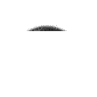

| system |
| home page |
| Spy Supply Store - Electronic surveillance equipment; hidden (pinhole) cameras, nanny-cams, video and telephone recorders, and counter spy equipment. . - Offering surveillance cameras for personal or corporate use. Advanced Electronic Group - Offering surveillance equipment, including hidden cameras, wireless systems and recording devices. Cal Western Personal Safety - Offering miniature, nanny, and pager cameras. |
|  | It is also the most economical system at such professional level. It is also include all the necessary accessories for the system. 95The best source for spy cameras, nanny cameras, hidden cameras, security and surveillance equipment The Only Reson why you want to buy from us. .. |